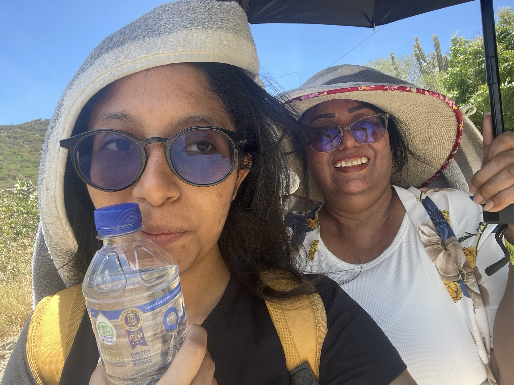
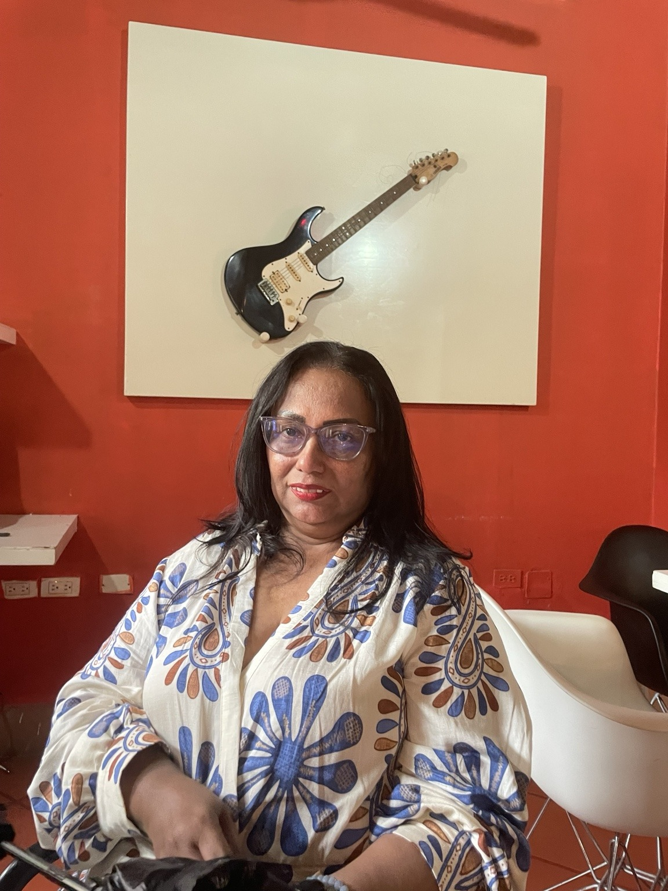
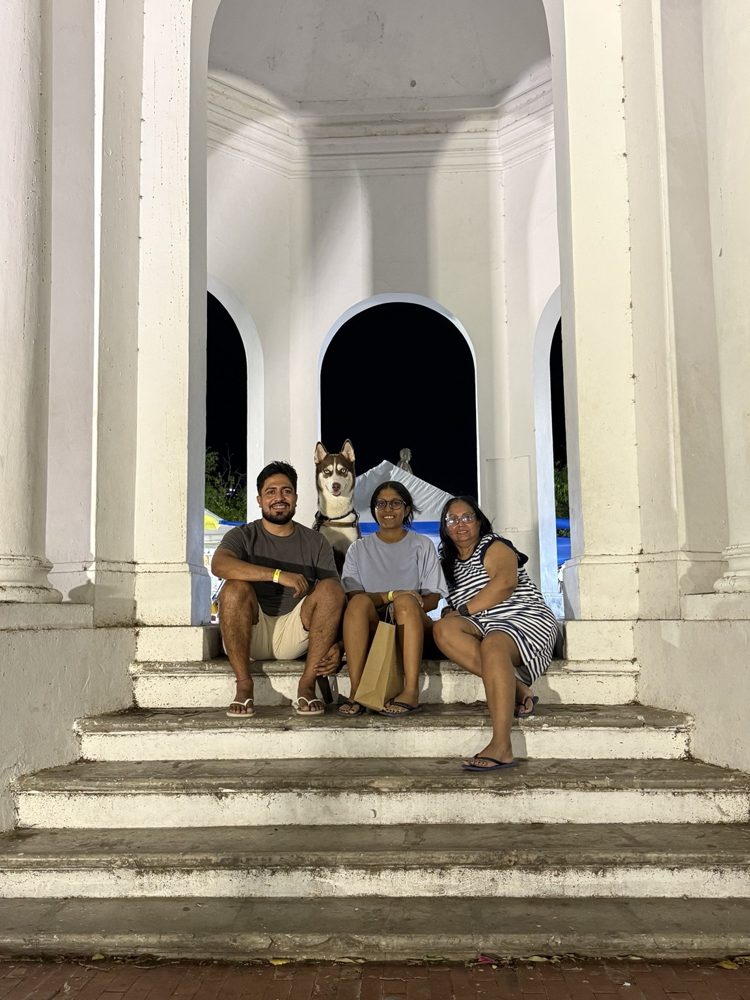
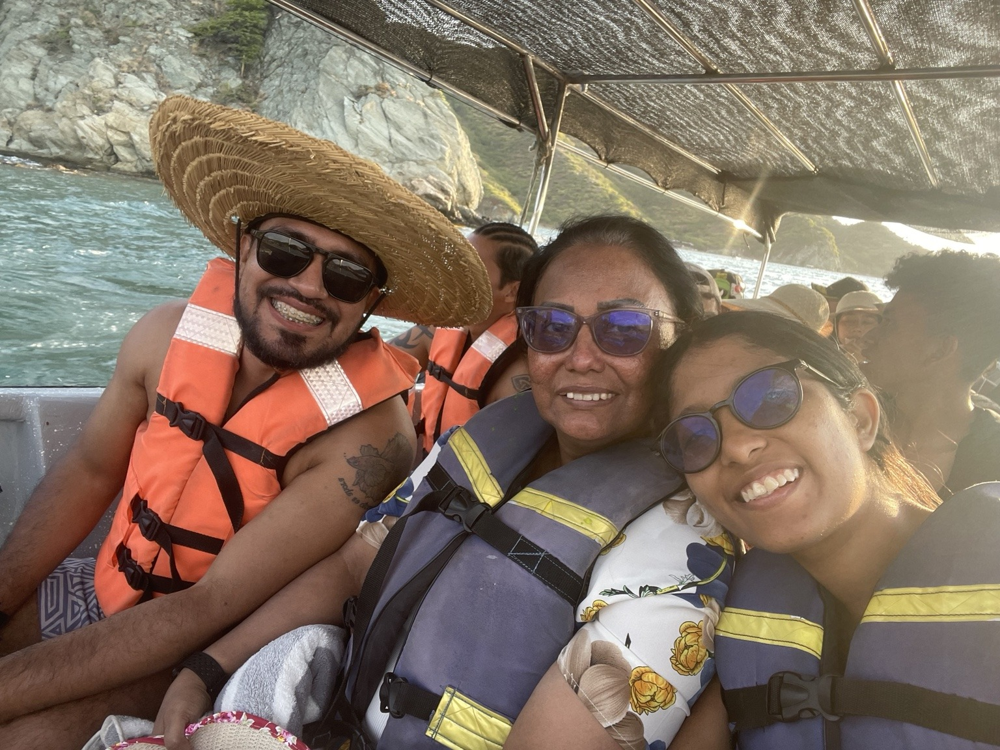
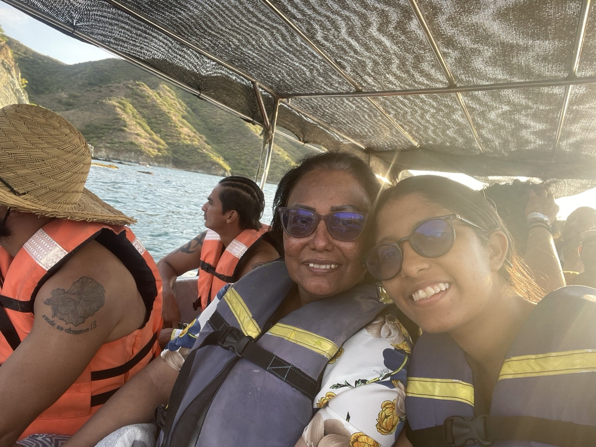
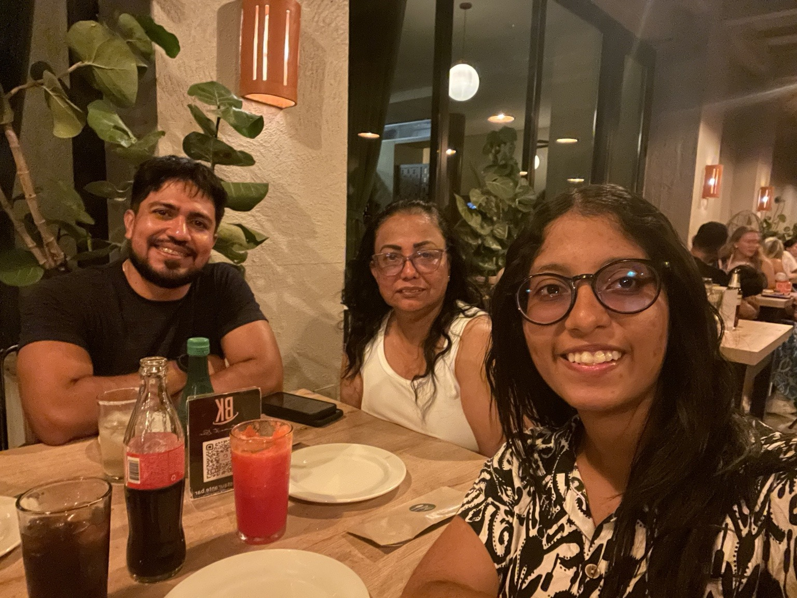
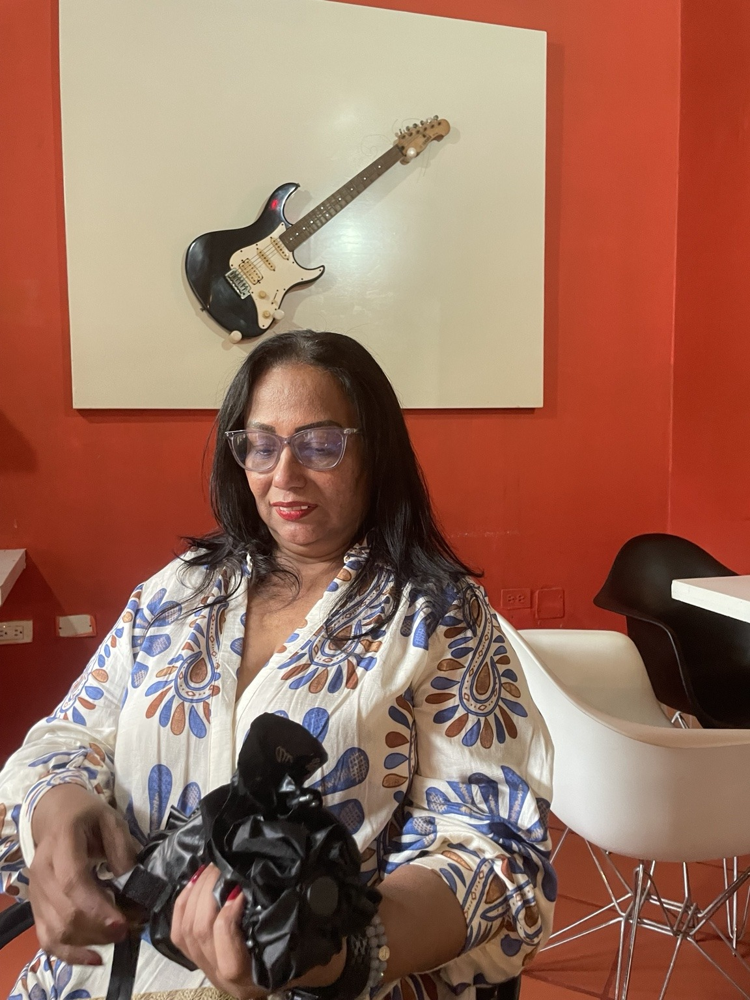

Fortaleza
La aprendí viéndote seguir adelante incluso en los momentos más difíciles.
Para la persona que siempre ha estado conmigo, que ha creído en mí y que nunca me ha dejado rendirme.
Mamá, esto es para ti ♥No sé si te digo lo suficiente cuánto te amo y lo importante que eres para mí. A veces siento que ya lo sabes, porque eres la persona a la que le cuento casi todo y porque siempre has estado presente. Pero hoy quería dejarlo escrito.
No quería darte un regalo cualquiera por tu cumpleaños. Quería hacer algo que pudieras volver a abrir cuando quisieras y que te recordara cómo te veo yo. Así que no voy a intentar escribir perfecto. Solo voy a decirte lo que siento, como me salga.
Hoy solo quiero que te veas un momento a través de mis ojos.

Si alguien me preguntara quién es la mujer que más admiro, siempre diría que tú. No tendría que pensarlo ni un segundo.
Te admiro porque sé que has pasado por muchísimas cosas y, aun así, siempre encontraste la forma de salir adelante y de sacarnos adelante a mi hermano y a mí. Ahora que he crecido entiendo mucho mejor todo lo que hiciste por nosotros.


Porque siempre terminas siendo tú. Cuando necesito un consejo, cuando tengo una buena noticia, cuando algo me preocupa o cuando simplemente necesito que alguien me recuerde que sí puedo.
Para mí, sentirme en casa no tiene que ver con un lugar. Tiene que ver con saber que puedo llegar a ti, hablarte y sentir que no estoy sola.
Para mí, hogar siempre has sido tú.
La aprendí viéndote seguir adelante incluso en los momentos más difíciles.
La aprendí de todas las veces que volviste a empezar sin dejarte vencer.
La veo en tus consejos, en la forma en que piensas y en cómo siempre terminas encontrando una solución.
Lo conocí desde el primer día porque siempre me has hecho sentir querida y apoyada.
Mis amigas siempre me dicen que les gustaría tener una mamá como la mía, por cómo eres, por los consejos que les das y por la forma en que siempre me apoyas.
Y cada vez que me lo dicen siento muchísimo orgullo, porque me doy cuenta de que no solo yo veo lo increíble que eres.
Ellas tienen razón: tener una mamá como tú es una suerte enorme. Y yo tengo el privilegio de poder decir que eres la mía.




Una mujer fuerte, inteligente, divertida y con ganas de disfrutar la vida. Me encanta que compartamos tantos gustos: viajar, ver películas, empezar una serie y convertir cualquier plan sencillo en un buen momento. Además de ser mi mamá, eres una de mis mejores compañías.
Y entre más crezco, más entiendo la suerte que tengo de tenerte.
Puede que muchas veces te hayas preguntado si estabas haciendo las cosas bien. Yo quiero que sepas que sí. Todo lo que hiciste por nosotros valió la pena. Muchas de las razones por las que hoy sigo luchando por mis sueños vienen de ti.
Sacaste adelante a tus hijos, nos enseñaste a no rendirnos y nos diste la tranquilidad de saber que siempre podíamos contar contigo.
Así que sí, mamá: lo lograste. Todo tu amor está aquí, en nosotros.
No quiero que esta página se quede solo en recuerdos. Todavía quiero seguir viviendo muchas cosas contigo, seguir pidiéndote consejos y seguir compartiendo esos planes que tanto nos gustan.
Todavía nos faltan muchas películas por ver, muchos viajes por hacer, muchas conversaciones y muchos cumpleaños por celebrar juntas.
No sé cómo agradecerte una vida entera de amor, de apoyo y de estar presente para mí.
Gracias por apoyarme en cada proyecto, por escucharme, por aconsejarme y por no dejarme rendir cuando las cosas se ponen difíciles.
Quiero que hoy recuerdes cómo te veo yo: como una mujer fuerte, inteligente, resiliente y como la persona que más ha influido en mi vida.
Mis amigas tienen razón cuando dicen que quisieran tener una mamá como la mía. Yo sé la suerte que tengo y no quiero darla por sentado. Aunque no siempre sea la mejor diciendo estas cosas, quiero que nunca dudes de cuánto te amo.
Feliz cumpleaños, mamá. Te amo muchísimo y espero poder seguir compartiendo la vida contigo por muchos años más.
Tu hija, Sofía ♥
Muchas de las cosas buenas que hay en mí...